2019年三季度居民消费价格预期调查报告
参加2019年三季度居民消费价格预期调查的专家及相关专业人士306人，收回有效问卷306份。与上期和去年同期的居民消费价格总水平和主副食品价格稳中缓涨预期相比，本期均以缓涨预期为主，看涨预期明显上升，平稳预期有所下降。受房地产市场政策环境改善的影响，今年上半年我省大部分地区房地产市场呈回暖态势，市场信心有所提振，助推市场预期进一步改善。与前两期相比，本期对商品房价格持上涨预期的人数占比继续攀升，且以缓涨预期为主，但上涨预期仍不及去年同期预期水平。
一、居民消费价格总水平上涨预期上升，呈缓涨预期
与2019年二季度相比，预计三季度居民消费价格总水平上涨219人，占比71.57%，其中预计缓和上涨184人、明显上涨35人，分别占84.02%、15.98%；预计基本持平81人，占比26.47%；预计有所下降6人，占比1.96% ；无人预计明显下降。
调查结果显示，超七成的人预计三季度居民消费价格总水平上涨，其中持缓和上涨预期的占八成以上；近三成的人预计居民消费价格总水平基本持平。总体来看，绝大多数人持居民消费价格总水平上涨的预期，并以缓涨为主。
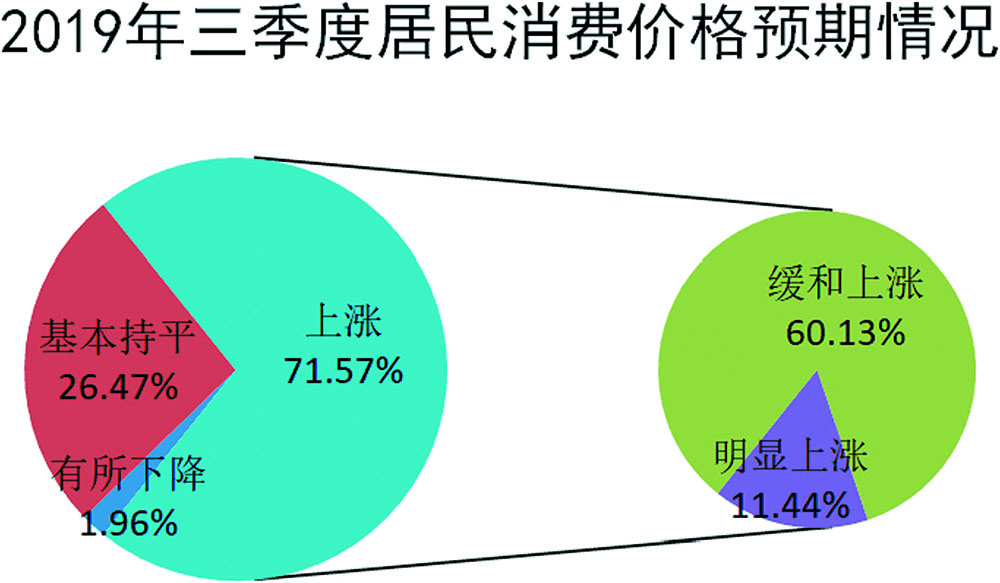
从居民消费价格总水平预期走势看，与上期48.22%的人预计居民消费价格总水平上涨相比，本期增加了23.35个百分点；与历史同期（调查期）相比，今年三季度（本期）对居民消费价格总水平持上涨预期的人数占比首次突破七成，较去年同期的48.27%，增加了23.3个百分点。
与上期45.95%的人预计居民消费价格总水平基本持平相比，本期下降19.48个百分点；与去年同期的48.53%相比，本期下降了22.06个百分点，持看平预期人数占比明显减少。
本期预计居民消费价格总水平下降的人数仍占极少数，较上期的5.83%和去年同期的3.20%，分别下降了3.87和1.24个百分点。
调查表明，相对于二季度和去年同期的居民消费价格总水平均以稳中看涨预期为主，本期持看涨预期的人数占比明显增多，并以缓涨预期为主。
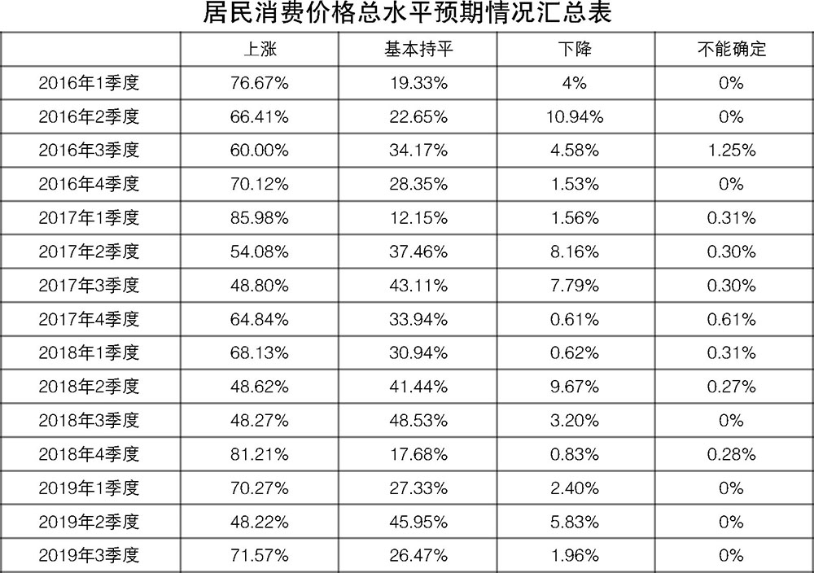
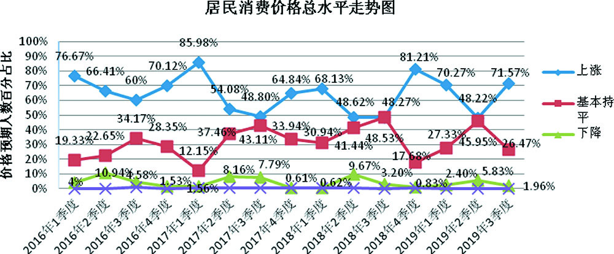
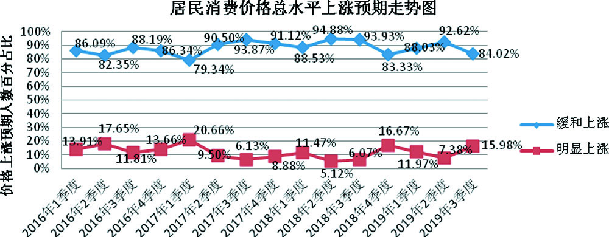
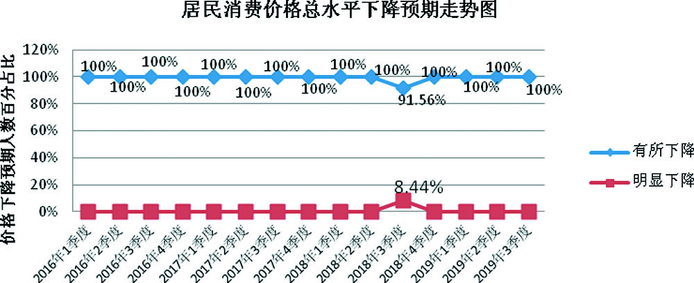
二、主副食品价格上涨预期明显上升，呈缓涨预期
与2019年二季度相比，预计三季度主副食品价格上涨214人，占比69.93%，其中预计缓和上涨162人、明显上涨52人，分别占75.7%、24.3%；预计基本持平86人，占比28.10%；预计有所下降6人，占比1.96%；无人预计明显下降。
调查结果显示，约七成的人预计三季度主副食品价格上涨，其中持缓涨预期的人超七成；近三成的人预计主副食品价格基本持平。大部分人预计主副食品价格上涨，并以缓涨为主。
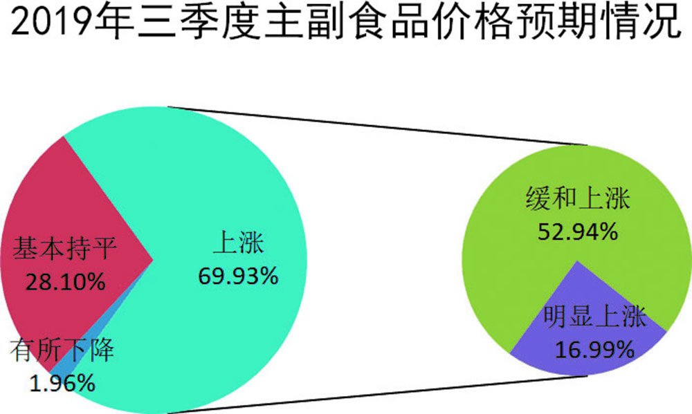
从主副食品价格预期走势看，与上期44.01%的人预计主副食品价格上涨相比，三季度看涨预期明显抬升，增加了25.92个百分点；与去年同期的42.13%相比，本期增加了27.8个百分点。
与上期43.69%的人预计主副食品价格基本持平相比，本期减少了15.59个百分点；与去年同期的49.87%相比，本期减少了21.77个百分点。
与上期12.30%的人预计主副食品价格下降相比，本期下降预期减少10.34个百分点，重新回落至极低位占比；与去年同期的7.73%相比，本期减少5.77个百分点。
调查表明，与上期大多数人对主副食品价格持稳中缓涨预期，本期主副食品价格呈上涨预期，并以缓涨为主；与去年同期相比，本期主副食品价格上涨预期大幅上升，看平预期则有所下降。
关于大米、食用油和猪肉价格预期情况。本期预计大米价格上涨76人，占比24.84%，其中缓和上涨75人，明显上涨1人，分别占98.67% 、1.33%；基本持平222人，占比72.55%；有所下降8人，占比2.61%；无人预计明显下降。预计食用油价格上涨110人，占比35.95%，其中缓和上涨103人，明显上涨7人，分别占93.63%、6.37%；基本持平192人，占比62.75%；有所下降2人，占比0.65%；无人预计明显下降。预计猪肉价格上涨231人，占比75.49%，其中缓和上涨153人，明显上涨78人，分别占66.23%、33.77%；基本持平69人，占比22.55%；有所下降5人，占比1.63%；无人预计明显下降。
调查结果显示：与上期相比，本期大米和食用油价格继续维持以平稳预期为主，但持看涨预期人数占比均有所增多，其中以食用油更为明显；与去年同期相比，大米和食用油价格上涨预期也都略有提升。受非洲猪瘟疫情与周期性叠加因素影响，猪肉价格近期持续上涨，且生猪产能恢复需要周期，猪肉价格上涨势头短期内恐难改变。从调查结果来看，无论与上期相比，还是与去年同期相比，三季度猪肉价格均由稳中缓涨预期为主转为缓涨预期为主，特别是与去年同期相比，变化非常明显，仅持上涨预期的人数占比就比去年翻了一番。入夏以后，建议各地重点关注由异常气候条件及突发自然灾害引发的主副食品价格异常波动，督促有关部门做好预案和应对，稳定市场供给，引导价格合理预期。
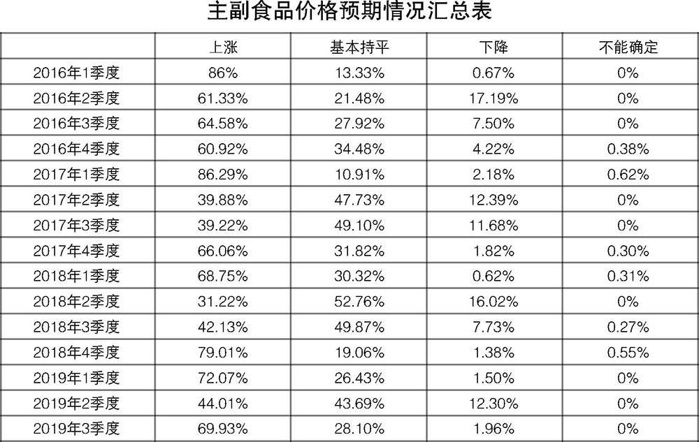
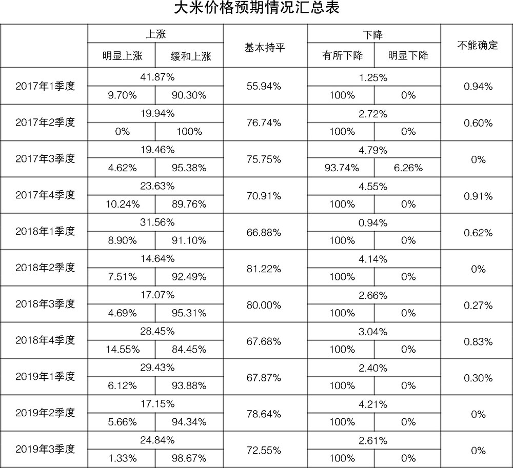
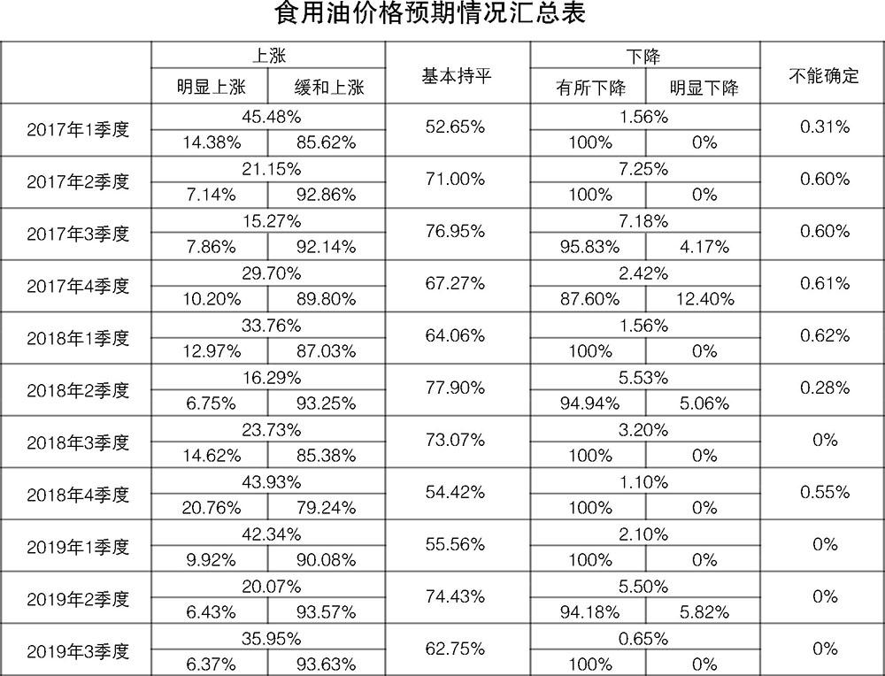
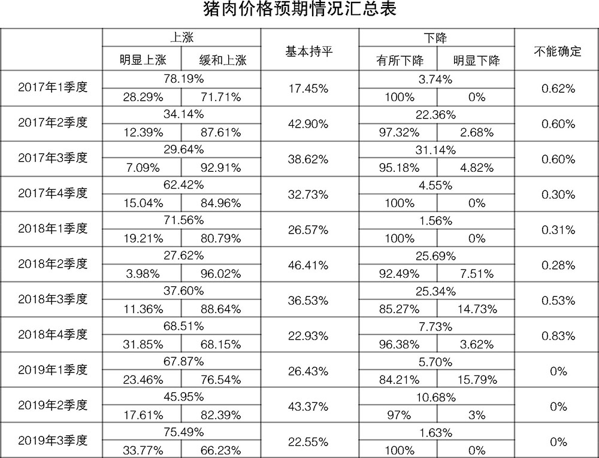
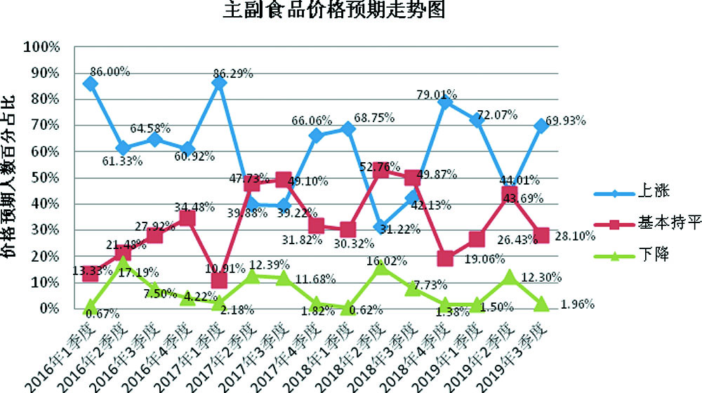
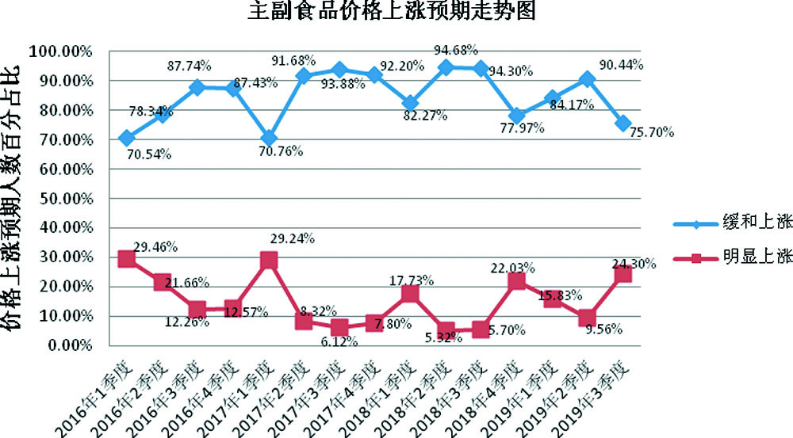
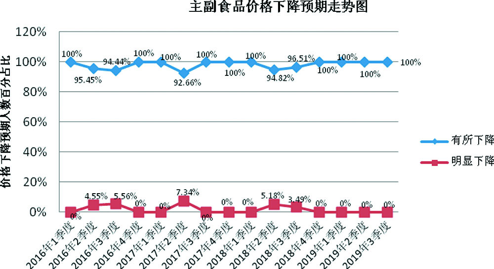
三、商品房价格上涨预期有所增强，呈以缓涨预期为主
调查结果显示，预计2019年三季度商品房总体价格上涨188人，占比61.44%，其中预计缓和上涨173人、明显上涨15人，分别占92.02%、7.98%；预计总体价格基本持平104人，占比33.99%；预计总体价格下降10人，占比3.27%，其中预计有所下降9人、明显下降1人，分别占89.91%、10.09%；不能确定4人，占比1.31%。
调查结果分析表明：约六成的人预计三季度商品房总体价格上涨，其中预计缓和上涨的人数超过九成；约三成的人预计商品房总体价格基本持平。总体来看，大多数人对三季度商品房总体价格持上涨预期，其中以缓涨预期为主。
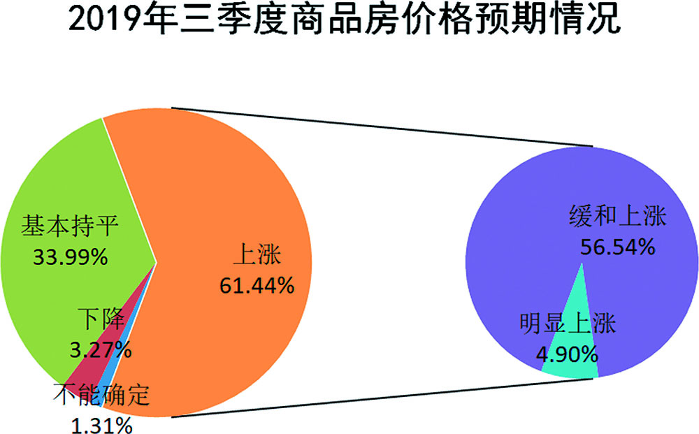
从本期商品房价格预期走势看，自2018年四季度以来，对商品房价格持上涨预期的人数占比再次攀升至半数以上，较二季度增加了20.34个百分点；与去年同期的70.40%相比，减少8.96个百分点。
与上期47.90%的人预计商品房价格基本持平相比，本期减少了13.91个百分点；与去年同期的25.60%相比，本期增加了8.39个百分点。
与上期10.68%的人预计商品房价格下降相比，本期持下降预期的人数占比继续下降，较上期减少7.41个百分点；与去年同期的2.93%相比，本期变化不大，略增0.34个百分点。
调查表明，与上期相比，本期商品房价格上涨预期大幅提高，下降预期回落明显，由以稳中缓涨预期为主转为以缓涨预期为主。与去年同期相比，上涨预期则略有回落。
我省处于东部沿海经济发达地区，是长三角洲城市群的重要组成部分，同时也是我国房价较高的省份之一。近年来，房地产调控政策不断收紧，我省房地产市场也从过热状态逐渐降温，并步入理性发展轨道。进入2019年以来，南京、苏州、常州等城市以保障刚需和改善性需求为重点，相继出台人才引进落户或者信贷政策引导房地产市场合理消费。在政策边际改善之下，这些城市的房地产市场开始回暖，也带动前三季度我省楼市看涨预期持续升温，相对于前两季度的以稳中缓涨预期为主，三季度转呈以缓涨预期为主。
从全省各地商品房价格预期情况走势来看，与前两季度相比，三季度各地商品房价格看涨预期普遍有所提高。其中，南京、无锡、徐州、常州、苏州、南通、扬州、泰州、宿迁9个市商品房价格以缓涨预期为主，其中6个市持上涨预期的人数占比超八成；盐城商品房价格以稳中缓涨预期为主；连云港、淮安、镇江3个市商品房价格以看平预期为主。值得注意的是，尽管市场预期有所改善，但未来楼市继续大涨的概率并不会太高。四月份，住建部就对一季度房价、地价波动幅度较大的6个城市进行了预警提示。这说明在楼市回暖的背后，住建部2019年“三稳”的调控目标毫不动摇，对于各城市楼市稳定的要求也丝毫没有放松。
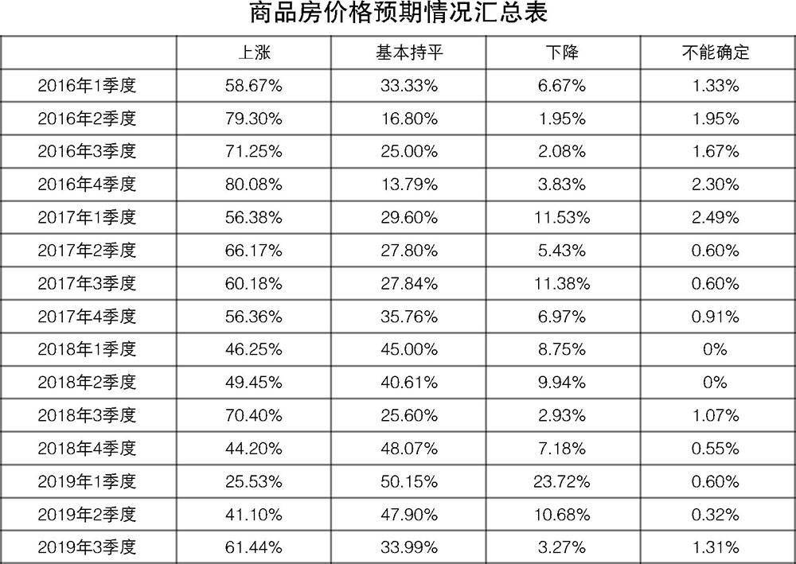
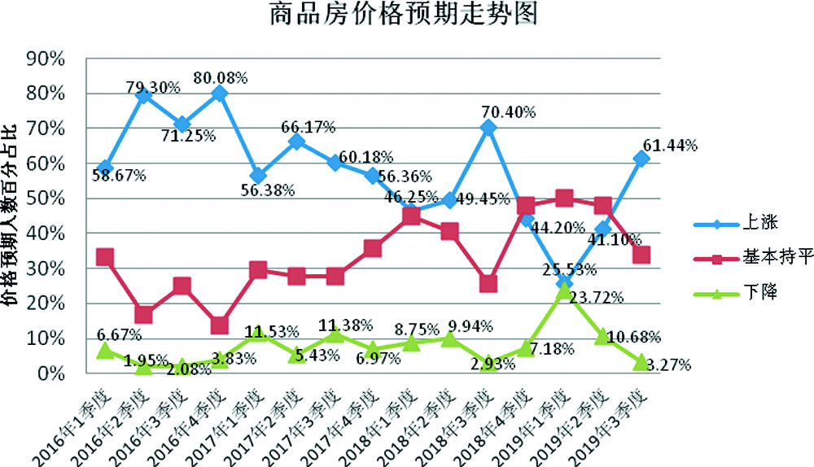
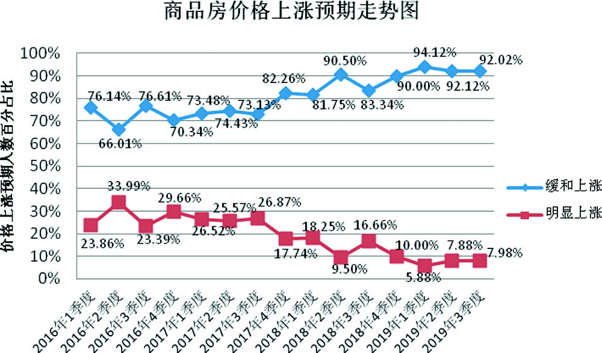
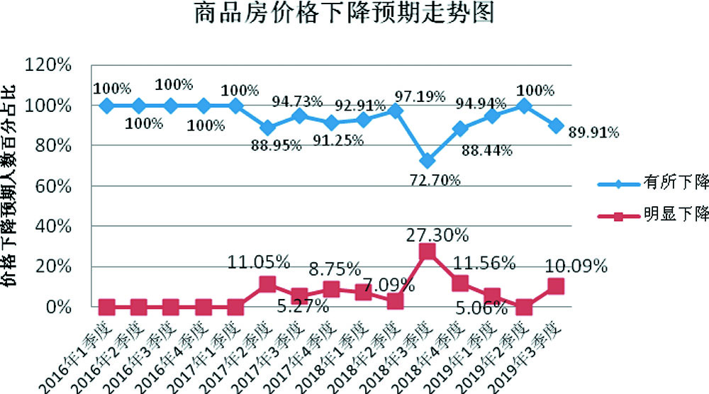
江苏省物价局-江苏省物价局网站
二○一九年七月